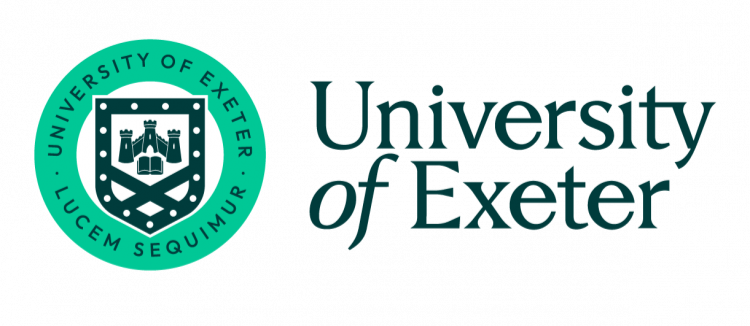

ON THE WAY

Shenbin Qian
s.qian@surrey.ac.uk
Centre for Translation Studies14LC03, Library Building
University of Surrey
Bio
I am a second-year PhD student (started in Jan 2022) from the Centre for Translation Studies, University of Surrey, where I work on the improvement of machine translation of emotion-loaded texts using deep learning methods, and am advised by Prof Constantin Orasan, Dr Félix do Carmo and Dr Diptesh Kanojia.
Converted from a researcher in humanity studies into a NLP-er, I am now more interested in using various machine learning methods such as generative adversarial networks (GANs) or reinforcement learning from human feedback to solve language related problems.
Follow Me


Education
- MSc in Applied Data Science and Statistics, 2022
- MA in Translation and Interpreting, 2017
University of Exeter, UK
Xihua University, China
Interest
Publications
- Shenbin Qian, Constantin Orăsan, Félix do Carmo, Qiuliang Li, Diptesh Kanojia (2023). Evaluation of Chinese-English Machine Translation of Emotion-Loaded Microblog Texts: A Human Annotated Dataset for the Quality Assessment of Emotion Translation. Proceedings of the 24th Annual Conference of the European Association for Machine Translation (Accepted in April).
- Shenbin Qian, Constantin Orăsan, Diptesh Kanojia, Hadeel Saadany, Félix do Carmo (2022). SURREY-CTS-NLP at WASSA2022: An Experiment of Discourse and Sentiment Analysis for the Prediction of Empathy, Distress and Emotion. Proceedings of the 12th Workshop on Computational Approaches to Subjectivity, Sentiment & Social Media Analysis.
- Shenbin Qian (2017). On Value Orientations of the Translation of News Buzzwords from the Perspective of Manipulation Theory–Taking C-E Translations of News Buzzwords in China Daily for Example. Chinese Master's Theses Full-text Database.
- Shenbin Qian, Linqian Yao, Xinxin Li (2016). E-C Translation Techniques and Strategies of Long Sentences in Informative Text In the Era of Fragmentation Reading. Journal of Chengdu Normal University.
- Shenbin Qian, Linqian Yao (2015). A Brief View of the Relation Between Faithfulness and Creativeness from the Perspective of the Limit of Faithfulness and the Type of the Source Text (从忠实性限度和文本类型角度看翻译“忠实”与“创造”的辩证关系). Journal of Sanmenxia Polytechnic.
Recent Publications in NLP
Early Publications in Translation Studies
Research Projects
University of Surrey's SME Innovation Voucher Scheme
Mar, 2022 - Jun, 2022
Led by Prof Constantin Orasan, collaborated with Monaco Solicitors (MS), this project investigated ways in which NLP technologies can help improve an award-winning tool developed by MS so that users are able to better understand and implement their legal rights freely.

Downscaling of Numerical Weather Prediction Data
Sept, 2021 - Dec, 2021
This was the MSc project of Shenbin Qian with the UK Met Office at the University of Exeter. The main purpose was to use low-resolution numerical weather prediction data to generate high-resolution data using deep learning techniques, especially single image super resolution (SR) techniques like SRCNN and SRGAN.
A Study on the Translation New Ecology under the Mode of Big Data
Jun, 2016 - Sept, 2016
Led by Prof Da Chen at Xihua University, this project was to explore new theories for translation studies from the Translation Ecology Theory under the new era of big data. I participated in the inital investigation of literature reading and summarisation in this area.
Work Exeprience

Jan, 2017 – Dec, 2020
Resource Engineer & Project Manager | Lancoo Group
- Crawled English teaching resources online for human cleaning and annotation;
- Established and maintained feature databases for knowledge recognition to identify English words, phrases and sentence (syntactic) patterns for teaching purposes, achieving an accuracy of 99%, 98% and 97% respectively;
- Managed the whole team and the project, and cooperated with other teams to integrete the project into the AI-IOT Smart Campus Solution.

Nov, 2015 - Mar, 2017
Part-Time English Teacher | Hujiang English
- Taught Chinese adult students basic spoken English and English pronunciation.

Apr, 2014 - Jun, 2014
Part-Time English Translator | Hithink Royalflush Information Network
- Translated the profiles and financial information of listed companies.
Recent Awards
Jan, 2023
EAMT Award for Sponsorship of Student Activities
- As part of its commitment to promote research, development and awareness about translation technologies, the European Association of Machine Translation (EAMT) for the third consecutive year launched a call for proposals to fund MT-related activities led by students during 2023.

Apr, 2022
Winner of the MSc Project Award
- This was awarded to the student with the best project for the year on an Mathematics MSc Programmme in the University of Exeter.
Apr, 2020
Global Excellence Scholarship
- The scholarship recipients were selected on academic merit and the ability to demonstrate academic ambition and future career ambitions.